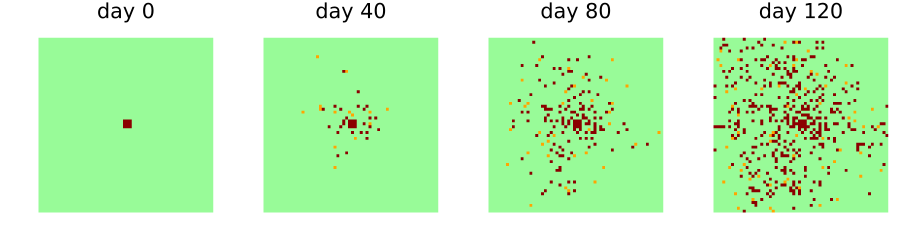

Using the zoo
Simon Frost
- Overview
- Finding a model
- What a model is, and is not
- Building and running a model
- Replicates
- Any backend
- Models with callbacks
Overview
EcologicalCellularAutomata collects published cellular automata for plant diseases and pests. Each model is a CellularAutomataCore CAModel, so it runs with the core’s schemes, backends, callbacks and ensembles. Each also carries metadata: its source, what the source compared it with, and how faithfully it follows the source. This vignette shows how to find a model, read what it is and is not, build it, and run it.
ENV["GKSwstype"] = "100"
using EcologicalCellularAutomata
using CellularAutomataCore
using Plots
using StatisticsFinding a model
list_models()7-element Vector{Symbol}:
:bt_cotton_refuge
:coffee_rust
:cvc_citrus
:domany_kinzel_viral
:fungus_dispersal
:huffaker_mites
:rhizoctonia_contactThe models can be filtered by category or by fidelity:
(diseases=list_models(; category="plant disease"),
pests=list_models(; category="agricultural pest"),
reproductions=list_models(; fidelity=:reproduction))(diseases = [:coffee_rust, :cvc_citrus, :domany_kinzel_viral, :fungus_dispersal, :rhizoctonia_contact], pests = [:bt_cotton_refuge, :huffaker_mites], reproductions = [:domany_kinzel_viral, :fungus_dispersal, :rhizoctonia_contact])What a model is, and is not
model_info returns the metadata of a model:
info = model_info(:fungus_dispersal)fungus_dispersal: Fungus dispersal among permissive and resistant hosts
plant disease: a hypothetical phytopathogenic fungus on a crop of permissive and resistant hosts
source: Ferreira, I. E. de P., Moral, R. de A., Ferreira, C. P. and Godoy, W. A. C. (2013). Modelling fungus dispersal scenarios using cellular automata. Ecological Informatics 14, 53-58. https://doi.org/10.1016/j.ecoinf.2012.11.005
fidelity: reproduction
reproduces: Figure 3 (infected hosts over 120 days for all-permissive, mixed and all-resistant fields) and Figure 1 (infected hosts at day 120 against the daily propagule load).
schemes: Synchronous
deviations: 6The fidelity says how close the model is to its source. A reproduction is the source’s model with the source’s parameters. An adaptation fills gaps in the source, or departs from it, and lists every such choice. An inspired model takes only the source’s ideas. Even a reproduction makes choices where its source is silent:
foreach(d -> println("- ", d), info.deviations)- The boundary is not stated in the source; the field is finite with nothing beyond its edges (no wrap-around), so propagules leaving it are lost.
- The latency convention is not stated; a host infected in the step from day t first disperses in the step from day t + latency. A latency of 0 is treated as 1, since a synchronous step cannot infect and disperse at once.
- The nine initial infectious hosts form a 3 x 3 block at the centre; the source says only 'at its centre'.
- The seasonal load is real-valued (not rounded) and evaluated at day t + 1 for the step from time t.
- The source does not say how the 50% mixed field of its Figure 3 was laid out; the random layout draws each host independently.
- Bands are vertical and start with a permissive band at the first column; the source gives the width (15) but not the orientation.A table of the whole zoo:
for id in list_models()
m = model_info(id)
println(rpad(id, 22), rpad(m.fidelity, 14), m.organism)
endbt_cotton_refuge adaptation Spodoptera frugiperda and Helicoverpa armigera
coffee_rust adaptation Hemileia vastatrix (coffee leaf rust)
cvc_citrus adaptation Xylella fastidiosa (citrus variegated chlorosis), transmitted by sharpshooter leafhoppers
domany_kinzel_viral reproduction a lytic virus with heritable replicative ability
fungus_dispersal reproduction a hypothetical phytopathogenic fungus
huffaker_mites adaptation the six-spotted mite Eotetranychus sexmaculatus and the predatory mite Typhlodromus occidentalis
rhizoctonia_contact reproduction Rhizoctonia solani (damping-off)Building and running a model
build returns the model, with the source’s parameter values as defaults:
model = build(:fungus_dispersal)CAModel fungus_dispersal
Ferreira et al. (2013) fungus dispersal, range 3.0, seasonality none
states:
host::Int8 = 0 ∈ 0:2 # 0 healthy, 1 latent, 2 infectious
resistant::Bool = false # resistant (true) or permissive
clock::Int16 = 0 # days since infection
parameters:
F_permissive = 0.003 # permissiveness of a permissive host
F_resistant = 0.001 # permissiveness of a resistant host
latency = 10 # latent period (days)
load = 40.0 # daily propagule load (seasonality :none)
load_max = 270.0 # peak daily load (seasonal)
peak = 60.0 # day of peak load (:temperate)
width = 10.0 # width of the season in days (:temperate)
amplitude = 0.15 # relative amplitude (:tropical)
period = 20.0 # period in days (:tropical)
fields: infectious
rule: LocalRule(<anonymous function>, VonNeumann(1))problem returns a problem with the source’s setup: here a 60 × 60 field with nine infectious hosts in the middle, for 120 days. Keywords change the setup, and pmap changes parameters by name:
prob = problem(:fungus_dispersal; seed=1)
sol = solve(prob; saveat=40)
plot([heatmap(u.host'; c=[:palegreen, :orange, :darkred], clims=(0, 2), colorbar=false,
aspect_ratio=:equal, framestyle=:none, title="day $t")
for (t, u) in zip(sol.t, sol.u)]...; layout=(1, 4), size=(900, 250))
Healthy hosts are green, latent hosts orange and infectious hosts dark red. Changing a parameter, here halving the daily propagule load:
half = solve(problem(:fungus_dispersal; seed=1, pmap=(; load=20.0)); save_everystep=false)
(full_load=fungus_infected(sol.u[end]), half_load=fungus_infected(half.u[end]))(full_load = 446, half_load = 193)Replicates
The models are stochastic, and a single run says little. Most problem constructors draw their initial state from seed as well, so replicates are problems built with different seeds. Here the infected hosts at day 120 over ten replicates:
finals = [fungus_infected(solve(problem(:fungus_dispersal; seed=s);
save_everystep=false).u[end]) for s in 1:10]
(mean=mean(finals), sd=round(std(finals); digits=1))(mean = 471.9, sd = 43.7)The core’s EnsembleProblem runs replicates in parallel. Its prob_func builds each replicate’s problem from SciMLBase’s ensemble context, whose sim_id numbers the replicates:
ens = EnsembleProblem(problem(:rhizoctonia_contact);
prob_func=(prob, ctx) -> problem(:rhizoctonia_contact; seed=ctx.sim_id))
runs = solve(ens, Synchronous(), EnsembleThreads(); trajectories=50, save_everystep=false)
mean(rhizoctonia_infected(r.u[end]) for r in runs.u)20.46Any backend
A model is specified once. The core’s backends run it, and those that support it agree exactly, because every random number comes from a counter-based generator keyed by the seed, the cell, the time and a draw number. The viral front model on three backends:
prob = problem(:domany_kinzel_viral; L=2000, tspan=200, seed=3)
threaded = solve(prob; backend=ArrayBackend(), save_everystep=false).u[end]
serial = solve(prob; backend=ArrayBackend(; threaded=false), save_everystep=false).u[end]
reference = solve(prob; backend=ReferenceBackend(), save_everystep=false).u[end]
threaded == serial == referencetrueModels with callbacks
Some sources describe steps that no local rule can express. Mites in the Huffaker model act one at a time, and their moves write two cells. Insecticide in the Bt cotton model is sprayed when either pest reaches a share of the whole field. Such parts are callbacks stored with the problem, so solve runs them without being told:
prob = problem(:bt_cotton_refuge; n=200, initial=50, scenario=:insecticide)
keys(prob.kwargs)(:callback,)They draw their random numbers from a generator seeded by the problem’s seed and the time, so a run is reproducible:
a = solve(prob; save_everystep=false).u[end]
b = solve(prob; save_everystep=false).u[end]
a == btrueThe following vignettes take the models one at a time. Each compares the model with its source’s results and repeats its deviations.